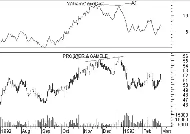

William's Accumulation/Distribution
Overview
Accumulation is a term used to describe a market controlled by buyers; whereas distribution is defined by a market controlled by sellers.
Interpretation
Williams recommends trading this indicator based on divergences:
- Distribution of the security is indicated when the security is making a new high and the A/D indicator is failing to make a new high. Sell.
- Accumulation of the security is indicated when the security is making a new low and the A/D indicator is failing to make a new low. Buy.
Example
The following chart shows Proctor and Gamble and the Williams' Accumulation/Distribution indicator.
A bearish divergence occurred when the prices were making a new high (point "A2") and the A/D indicator was failing to make a new high (point "A1"). This was the time to sell.
Calculation
To calculate Williams' Accumulation/Distribution indicator, first determine the True Range High ("TRH") and True Range Low ("TRL").
Today's accumulation/distribution is then determined by comparing today's closing price to yesterday's closing price.
If today's close is greater than yesterday's close:

If today's close is less than yesterday's close:

If today's close is equal to yesterday's close:

The Williams' Accumulation/Distribution indicator is a cummulative total of these daily values.